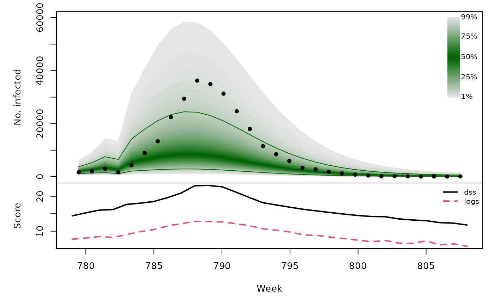
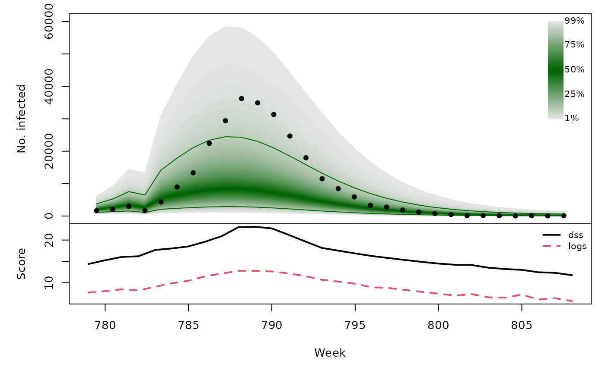

Forecasting Swiss ILI counts using forecast::auto.arima
Sebastian Meyer
2018-09-03
Source:vignettes/CHILI_arima.Rmd
CHILI_arima.Rmdlibrary("HIDDA.forecasting")
library("ggplot2")
source("setup.R", local = TRUE) # define test periods (OWA, TEST)In this vignette, we use forecasting methods provided by:
library("forecast")Hyndman R, Athanasopoulos G, Bergmeir C, Caceres G, Chhay L, O’Hara-Wild M, Petropoulos F, Razbash S, Wang E, Yasmeen F (2018). forecast: Forecasting Functions for Time Series and Linear Models. R package version 8.4, https://CRAN.R-project.org/package=forecast.
Modelling
ARIMA models assume a Gaussian response, so we need to work with transformed counts:
BoxCox.lambda(CHILI, method = "loglik")## [1] -0.05=> Box-Cox procedure suggests a log-transformation (lambda = 0).
arimafit <- auto.arima(CHILI, lambda = 0, stepwise = FALSE, approximation = FALSE)The above standard approach cannot automatically account for seasonality because the data have no regular frequency (not a standard "ts") … But we can manually add sine/cosine covariates and a christmas indicator just like in the endemic part of the hhh4 model (see vignette("CHILI_hhh4")).
sarima_cov <- t(sapply(2*pi*seq_along(CHILI)/52.1775,
function (x) c(sin = sin(x), cos = cos(x))))
sarimax_cov <- cbind(sarima_cov,
christmas = as.integer(strftime(index(CHILI), "%V") == "52"))
sarimaxfit <- auto.arima(CHILI, lambda = 0, stepwise = FALSE, approximation = FALSE,
xreg = sarimax_cov)
summary(sarimaxfit)## Series: CHILI
## Regression with ARIMA(2,0,2) errors
## Box Cox transformation: lambda= 0
##
## Coefficients:
## ar1 ar2 ma1 ma2 intercept sin cos
## 1.6088 -0.6987 -1.0680 0.4763 7.0546 0.8273 1.8631
## s.e. 0.0624 0.0565 0.0621 0.0347 0.0721 0.1057 0.1053
## christmas
## -0.4765
## s.e. 0.0966
##
## sigma^2 estimated as 0.227: log likelihood=-597.65
## AIC=1213.3 AICc=1213.5 BIC=1256.39
##
## Training set error measures:
## ME RMSE MAE MPE MAPE MASE
## Training set 440.9847 2536.649 1031.402 -13.42781 40.59669 0.2491598
## ACF1
## Training set 0.6530118CHILIdat <- fortify(CHILI)
CHILIdat$sarimaxfitted <- fitted(sarimaxfit)
CHILIdat <- cbind(CHILIdat,
sapply(c(sarimaxlower=0.025, sarimaxupper=0.975), function (p)
InvBoxCox(BoxCox(fitted(sarimaxfit), lambda = sarimaxfit$lambda) +
qnorm(p, sd = sqrt(sarimaxfit$sigma2)),
lambda = sarimaxfit$lambda)))ggplot(CHILIdat, aes(x=Index, ymin=sarimaxlower, y=sarimaxfitted, ymax=sarimaxupper)) +
geom_ribbon(fill="orange") + geom_line(col="darkred") +
geom_point(aes(y=CHILI), pch=20) +
scale_y_sqrt(expand = c(0,0), limits = c(0,NA))One-week-ahead forecasts
We compute 213 one-week-ahead forecasts from 2012-W48 to 2016-W51 (the OWA period).
The model selected above is refitted at each time point, but we do not repeat auto.arima() model selection. This is similar to so-called time-series cross-validation as implemented in forecast::tsCV(). However, tsCV() only computes absolute errors of the point forecasts, whereas we are interested in assessing probabilistic forecasts so also need the forecast variance.
For each time point, forecasting with Arima takes about 0.5 seconds, i.e., computing all one-week-ahead forecasts takes approx. 1.8 minutes … but we can parallelize.
sarimaxowa <- t(simplify2array(surveillance::plapply(X = OWA, FUN = function (t) {
sarimaxfit_t <- update(sarimaxfit, subset = 1:t)
unlist(predict(sarimaxfit_t, nahead=1, newxreg=sarimax_cov[t+1,,drop=FALSE]))
}, .parallel = 2)))
save(sarimaxowa, file = "sarimaxowa.RData")ARIMA forecasts for the log-counts are normal with mean pred and variance se^2 => back-transformation via exp() is log-normal
surveillance::pit(
x = CHILI[OWA+1], pdistr = plnorm,
meanlog = sarimaxowa[,"pred"], sdlog = sarimaxowa[,"se"]
)sarimaxowa_scores <- scores_lnorm(x = CHILI[OWA+1],
meanlog = sarimaxowa[,"pred"],
sdlog = sarimaxowa[,"se"],
which = c("dss", "logs"))
summary(sarimaxowa_scores)## dss logs
## Min. : 7.129 Min. : 4.139
## 1st Qu.:10.905 1st Qu.: 6.296
## Median :13.639 Median : 7.664
## Mean :13.778 Mean : 7.733
## 3rd Qu.:15.654 3rd Qu.: 8.919
## Max. :62.799 Max. :12.631sarimaxowa_quantiles <- sapply(X = 1:99/100, FUN = qlnorm,
meanlog = sarimaxowa[,"pred"],
sdlog = sarimaxowa[,"se"])
osaplot(
quantiles = sarimaxowa_quantiles, probs = 1:99/100,
observed = CHILI[OWA+1], scores = sarimaxowa_scores,
start = OWA[1]+1, xlab = "Week", ylim = c(0,60000),
fan.args = list(ln = c(0.1,0.9), rlab = NULL)
)
Long-term forecasts
sarimaxfor <- lapply(TEST, function (testperiod) {
t0 <- testperiod[1] - 1
fit0 <- update(sarimaxfit, subset = 1:t0)
fc <- predict(fit0, n.ahead = length(testperiod),
newxreg = sarimax_cov[testperiod,,drop=FALSE])
list(testperiod = testperiod,
observed = as.vector(CHILI[testperiod]),
pred = fc$pred, se = fc$se)
})invisible(lapply(sarimaxfor, function (x) {
surveillance::pit(x = x$observed, pdistr = plnorm,
meanlog = x$pred, sdlog = x$se,
plot = list(main = format_period(x$testperiod, fmt = "%Y", collapse = "/")))
}))t(sapply(sarimaxfor, function (x) {
quantiles <- sapply(X = 1:99/100, FUN = qlnorm,
meanlog = x$pred, sdlog = x$se)
scores <- scores_lnorm(x = x$observed,
meanlog = x$pred, sdlog = x$se,
which = c("dss", "logs"))
osaplot(quantiles = quantiles, probs = 1:99/100,
observed = x$observed, scores = scores,
start = x$testperiod[1], xlab = "Week", ylim = c(0,60000),
fan.args = list(ln = c(0.1,0.9), rlab = NULL))
colMeans(scores)
}))## dss logs
## [1,] 16.49914 8.980328
## [2,] 16.04525 8.324095
## [3,] 16.67945 9.070910
## [4,] 16.48377 9.161205 
